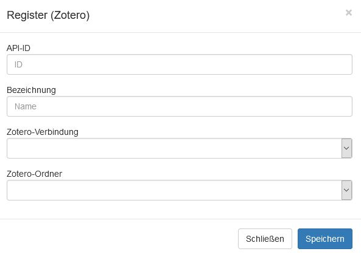

Crear un registro de las entradas bibliográficas de Zotero
Se pueden configurar registros para conexiones individuales con Zotero con el fin de que luego puedan ser utilizados en ediarum.
- Seleccione el menú Verwaltung > Projekte (“Gestión → Proyectos”).
- Haga clic en el campo de su proyecto.
- Seleccione el menú Projektkonfiguration > Register (“Configuración de proyectos → Registros”).
- Asegúrese de que el registro que quiere crear no está ya incluido en la lista de registros mostrada.
- En el campo Neue Registeranbindung (Projekt) (“Nueva conexión de registro (proyecto)”), haga clic en Hinzufügen (“Añadir”).
-
Especifique todos los parámetros en la ventana abierta.
Figura 1. Ventana para introducir los parámetros del registro de Zotero (Para la traducción de los campos en alemán, véase la lista de abajo)

- API-ID (“ID de la API”): Introduzca aquí una
secuencia única de letras y caracteres (sin caracteres especiales), con
la ayuda de la cual el registro puede ser dirigido a través de un URI.
Esto es importante más adelante para las variables específicas del
usuario. (Puede definir el ID libremente. No está relacionado con el ID
de la API de la conexión a Zotero). Por ejemplo:
- mEdi
- Bezeichnung (“Denominación”): Puede elegir
libremente el nombre del registro. Por ejemplo:
- MiEdicion
- Zotero-Verbindung (“Conexión de Zotero”): Seleccione una de las conexiones de Zotero establecidas. Si aún no existe ninguna conexión, primero debe establecerse una. (Véase el paso anterior: Establecer una conexión con Zotero.)
- Zotero-Ordner (“Carpeta de Zotero”): Un registro puede restringirse a una sola carpeta de un grupo de Zotero. Si este es el caso, entonces la carpeta correspondiente debe ser seleccionada aquí. Si el campo permanece vacío, el registro incluye todas las entradas del grupo de Zotero.
- API-ID (“ID de la API”): Introduzca aquí una
secuencia única de letras y caracteres (sin caracteres especiales), con
la ayuda de la cual el registro puede ser dirigido a través de un URI.
Esto es importante más adelante para las variables específicas del
usuario. (Puede definir el ID libremente. No está relacionado con el ID
de la API de la conexión a Zotero). Por ejemplo:
-
Haga clic en Speichern (“Guardar”).
Ahora están disponibles varias acciones para cada grupo de Zotero configurado:
- API-Links:
- GET: Salida del registro en formato TEI.
- UPDATE: El registro se actualiza con el estado actual de las entradas de Zotero a través de la conexión con Zotero.
- UPDATE and GET: El registro se actualiza primero y luego se emite en la forma actualizada en formato TEI.
- Bearbeiten (“Editar”): Las configuraciones anteriormente mencionadas pueden ser modificadas.
- Entfernen (“Eliminar”): Se elimina el registro.
- API-Links: